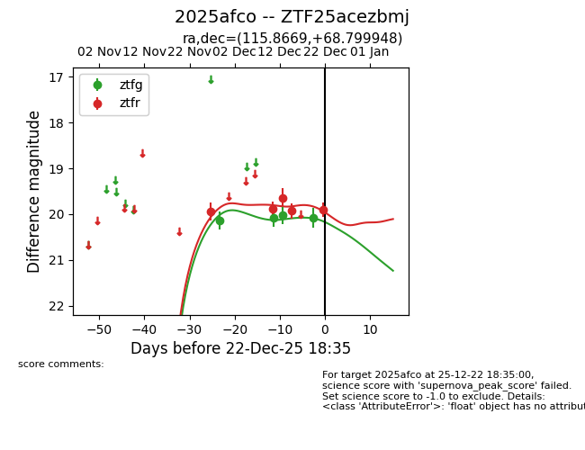
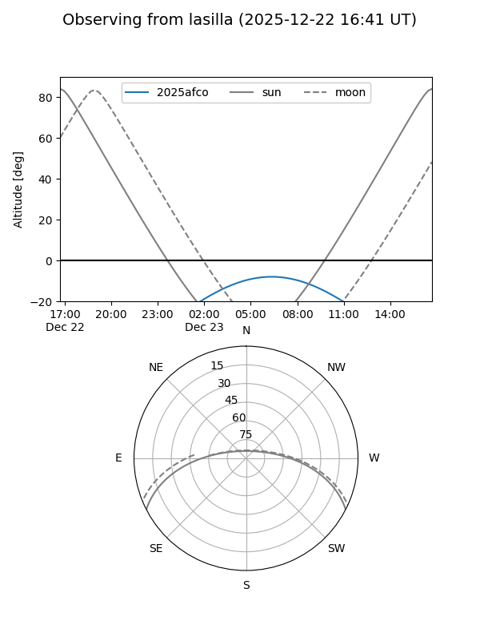
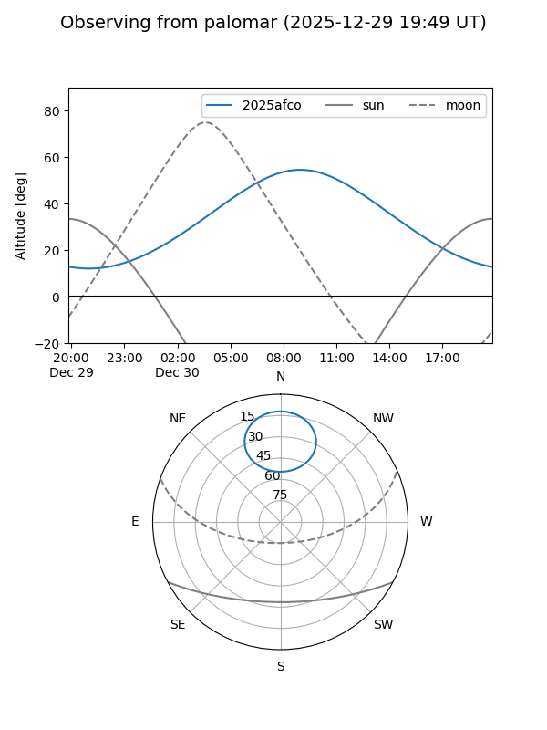
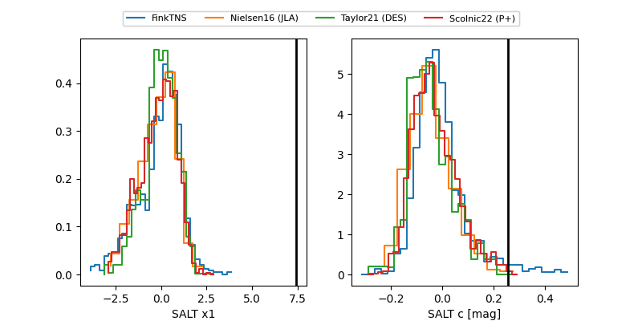

2025afco
Target 2025afco at 2025-12-31 17:59
Aliases and brokers:
FINK: link
Lasair: link
ALeRCE: link
TNS: link
YSE: link
alt names
ZTF25acezbmj (ztf,fink_ztf)
2025afco (tns,yse)
Coordinates:
equatorial (ra, dec) = 115.8669,+68.79995
equatorial (HMS+DMS) = 07:43:28.05,+68:47:59.81
galactic (l, b) = (146.8981,+29.83894)
Flags:
Photometry:
last ztfg=20.08, ztfr=19.85
4 ztfg, 6 ztfr detections
Lightcurve

Visibility


Additional plots
